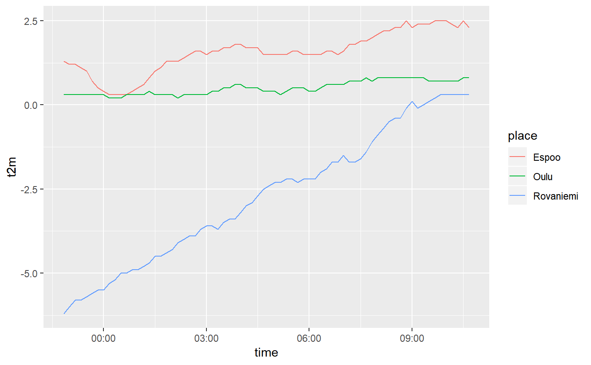

fmir provides simple tools for easily accessing up to date, open weather data from Finland. The data are made available by the Finnish Meteorological Institute and are licensed under CC-BY 4.0. See FMI’s open data manual for details.
Key features in fmir include:
- Use simple R syntax to create queries for the FMI API
- Flexibly download XML weather data from the API
- Parse the XML response into a regular data frame
FMI provides varying types of data in several different formats in their API, implemented using OGC Web Feature Service (WFS). Currently the only format supported by fmir is the “simple” weather format. For a more comprehensive and feature-rich package for accessing the FMI API, check out https://github.com/rOpenGov/fmi.
Usage
You can construct query URLs to the API with fmi_query(), and then execute them with fmi_data(). A simple query with only a place parameter will return weather observations with a 10-minute interval for the past 12 hours:
library(fmir)
library(ggplot2)
# generate a query url with fmi_query
q <- fmi_query(place = c("Espoo", "Oulu", "Rovaniemi"))
# download the data corresponding to your query
weather <- fmi_data(q)
weather
#> # A tibble: 216 x 14
#> place location time p_sea r_1h rh ri_10min snow_aws
#> <chr> <chr> <dttm> <dbl> <dbl> <dbl> <dbl> <dbl>
#> 1 Espoo 60.1780~ 2019-02-09 22:50:00 995. NaN 93 0.5 39
#> 2 Espoo 60.1780~ 2019-02-09 23:00:00 995. 0.6 94 0.7 39
#> 3 Espoo 60.1780~ 2019-02-09 23:10:00 995. NaN 94 0.6 39
#> 4 Espoo 60.1780~ 2019-02-09 23:20:00 995. NaN 95 0.4 39
#> 5 Espoo 60.1780~ 2019-02-09 23:30:00 995. NaN 95 0.7 39
#> 6 Espoo 60.1780~ 2019-02-09 23:40:00 995 NaN 96 0.8 39
#> 7 Espoo 60.1780~ 2019-02-09 23:50:00 995 NaN 96 1.4 39
#> 8 Espoo 60.1780~ 2019-02-10 00:00:00 995. 0.9 97 1.6 39
#> 9 Espoo 60.1780~ 2019-02-10 00:10:00 995. NaN 97 1.2 39
#> 10 Espoo 60.1780~ 2019-02-10 00:20:00 995. NaN 97 1 39
#> # ... with 206 more rows, and 6 more variables: t2m <dbl>, td <dbl>,
#> # vis <dbl>, wd_10min <dbl>, wg_10min <dbl>, ws_10min <dbl>
# draw a simple line graph of the recent temperature
ggplot(weather, aes(time, t2m)) + geom_line(aes(colour = place))
In the wild
For a real use-case, check out Pasi Haapakorva’s blog post (in Finnish) looking at the trend in monthly average temperatures in Oulu in 1955–2018. Spoiler alert: it’s been getting warmer.